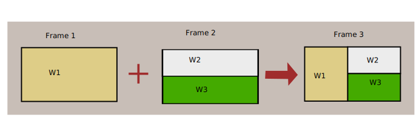
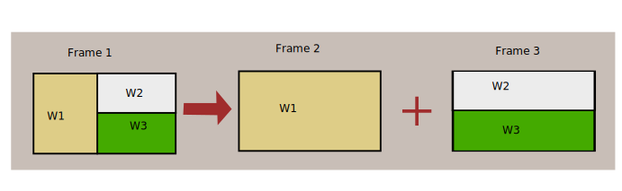
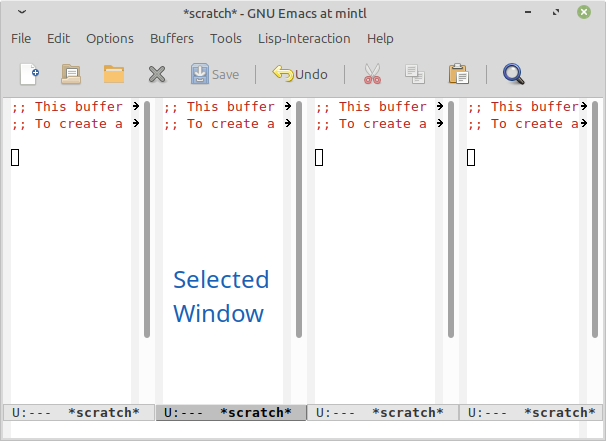

Overview
I’ve coded 2 new frame and widnow related functions that have been added to emacs.
The functions are kind of difficult to understand properly and have
long docstrings (especially split-frame), so this provides some
visuals which should really help.
Merge frames
M-x merge-frames

This function merges 2 frame into one window. If a prefix arg is
provided (e.g. with C-u), the the resulting frame will consist of a
vertical split(so if I used prefix arg with the above image, frame 3
would have W1 above W2 which would be above W3).
Yep, it’s that simple.
Split frame
M-x split-frame
The following image consists of the simplest example where there is only one root level split:

Here is the rather confusing docstring which you don’t have to read:
"Split windows of specified FRAME into two separate frames.
FRAME must be a live frame and defaults to the selected frame. ARG
specifies the number of windows to consider for splitting and defaults
to 1. Interactively, ARG is the prefix argument.
First divide the child windows of FRAME's main window into two parts.
The first part includes the first ARG child windows if ARG is positive,
or -ARG last windows if it's negative. The second part includes the
remaining child windows of FRAME's main window. Then clone into a
newly-created frame each of the windows of the part which does not
include FRAME's selected window and delete those windows from FRAME.
Signal an error if ARG is either zero or not a number, if FRAME's main
window is live or does not have more child windows than specified by the
absolute value of ARG. Return the new frame."Ok, so basiclly split-window accept one numerical prefix arg, which by default
is 1. So C-u 1 M-x split-frame is the same as M-x split-frame.
We will refer to this prefix argument as ARG.
Assume we have a frame setup like this:

This frame setup will be notated as:
-------------------
| W1 |_W2_| W3 | W4 |
-------------------(the selected window is notated like _WN_)
ARG basiclly determines where an imaginary, divider is placed, which will decide where the split happens.
The divider is placed counting from the left, but if ARG is negetive, then counting from the right.
Now say we call split-frame with ARG of 1 (which is the same as ARG
of -3, which means we could start counting from right but end up in
same place)
----||-------------- ---- --------------
| W1 ||_W2_| W3 | W4 | -> |_W1_| |_W2_| W3 | W4 |
----||-------------- ---- -------------- The left side shows where the imaginary divider is placed with ||, and the right side contains the 2 resulting frames.
Another example for with ARG of 2 (which in this case is the same as ARG of - 2)
---------||--------- ---- ---- ----------
| W1 |_W2_|| W3 | W4 | -> | W1 |_W2_| + |_W3_| W4 |
---------||--------- --------- --------- That’s it.
If you want the more technical details of which windows will be cloned accross to the new frame and all that, check out the docstring.
Tabs TODO
These functions currently work only with frames, even though the code could copy pasted with some parts replace to work for tabs (i.e. merge-tabs and split-tabs). I might come back to doing this later, but if you want to contribute then please do so, just send a mail to emacs-devel and cc (my email can be found here) me.
Development
This is my second contribution to emacs window/frame management features, and by far the easier one as the concept was simpler and I already had some experiance with windows in emacs.